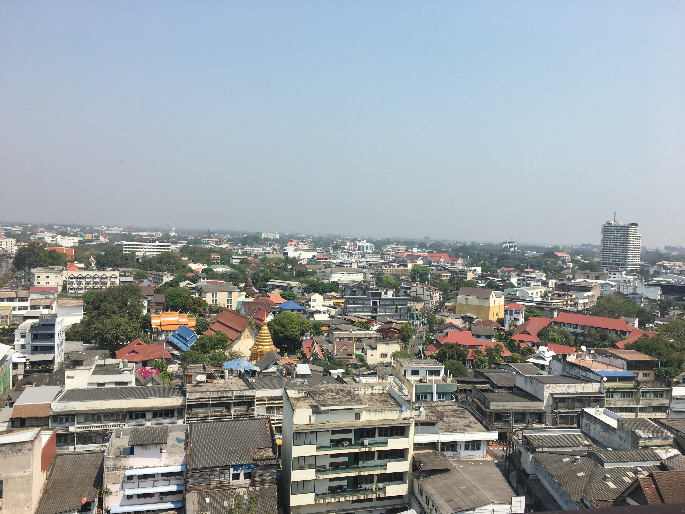
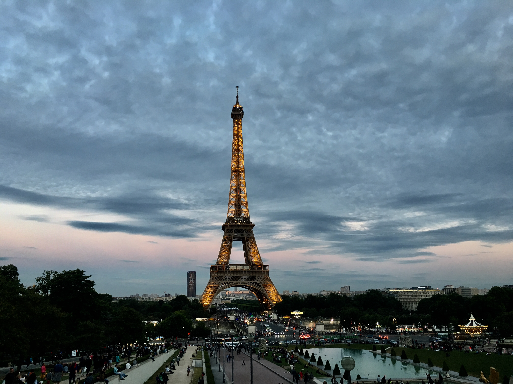

Travelling

Travelling and studying in various countries (France, Canada, Hong Kong and United Kingdom) has enabled me to discover many different cultures and to meet amazing people from around the world. This has allowed me to adapt myself more easily to different situations, and to become even more open minded. During my travels, taking pictures to capture most of the memories brought me happiness.

- Canada 🇨🇦
- Hong Kong ðŸ‡ðŸ‡°
- Thailande 🇹ðŸ‡
- 


- Singapour 🇸🇬
- Cambodge 🇰ðŸ‡
- United Kingdom 🇬🇧
- France 🇫🇷
- 